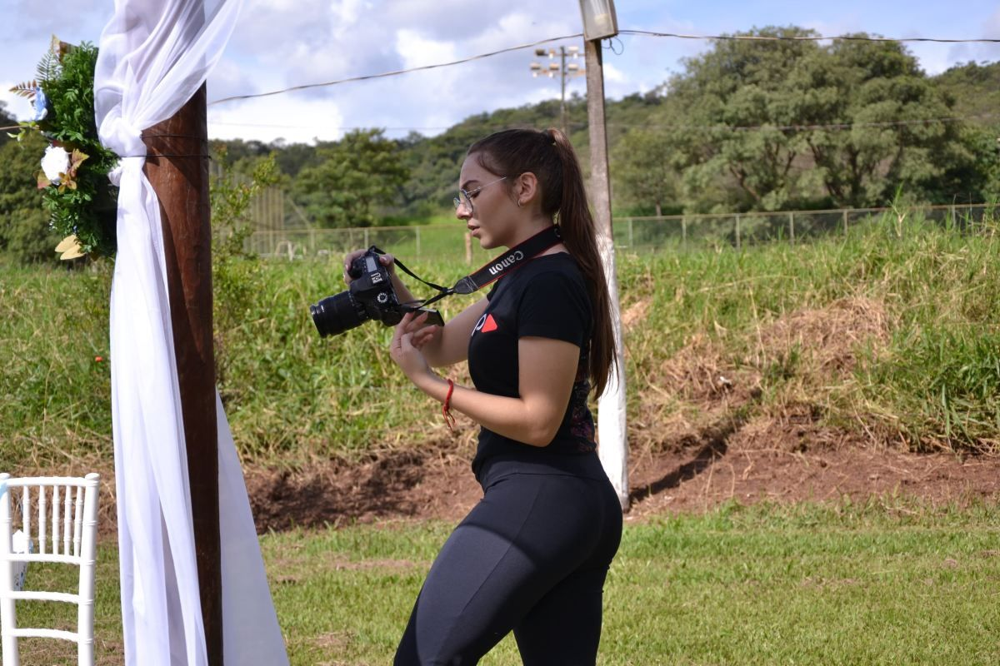

Sobre Mim
Técnica em Áudio e Vídeo pelo Instituto Federal de Brasília (IFB) - Recanto das Emas.
Graduanda em Comunicação Social - Audiovisual pela Universidade de Brasília (UnB).
Membro da Empresa Júnior - Pupila Audiovisual.
Meu estilo fotográfico é guiado pela emoção e pela luz natural. Busco retratar não apenas o momento, mas o sentimento que o envolve — seja o olhar de cumplicidade de um casal no altar, a euforia de uma plateia durante uma intervenção cultural ou a adrenalina de um evento esportivo. Cada clique é uma escolha intencional para contar uma história autêntica e visualmente marcante.
Estou disponível para coberturas de casamentos, eventos culturais e artísticos, eventos corporativos e eventos esportivos em Brasília e região. Se você tem um projeto especial ou quer conversar sobre como podemos trabalhar juntas, entre em contato pelo WhatsApp ou Instagram — será um prazer transformar o seu momento em imagem.
© 2026 Giovanna Caridade. Todos os direitos reservados.